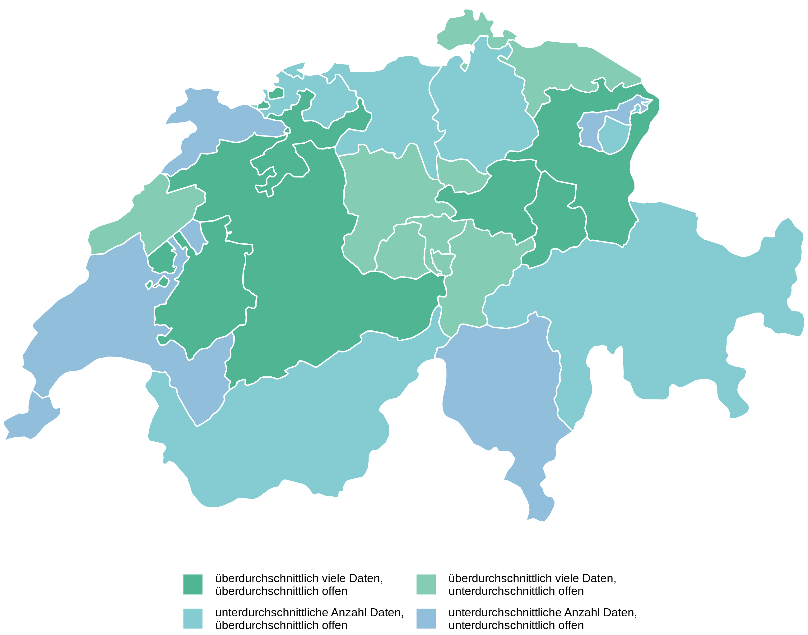

Verfügbarkeit von Geodaten auf geodienste.ch
Ralph Straumann
Zuletzt aktualisiert: 11.04.2023
Diese Webseite zeigt, wie die Schweizer Kantone räumliche Daten, auch Geodaten genannt, auf der Plattform geodienste.ch zur Verfügung stellen. Das Angebot der Kantone wird verglichen in Bezug auf die Anzahl angebotener Datensätze und in Bezug darauf, wie offen die Kantone den Zugriff auf ihre jeweiligen Geodaten gestalten.
Bei der Gestaltung der Webseite wurde darauf geachtet, dass die Informationen für möglichst viele Personen verständlich sind. Spezielle Begriffe sind mit dem Symbol «ⓘ» gekennzeichnet. Wenn Sie den Mauszeiger über das Symbol halten, erhalten Sie eine kurze Erklärung des Begriffs. Die Abbildungen auf dieser Webseite sind interaktiv. Wenn Sie den Mauszeiger über eine Abbildung bewegen, erscheint zudem eine Werkzeugleiste oben rechts neben der Abbildung. Mit dem Kamera-Symbol 📷 können Sie die Abbildung herunterladen.
1 Einführung
Unter geodienste.ch stellen die Kantone und das Fürstentum Liechtenstein ihre sogenannten Geobasisdaten ⓘ zur Verfügung. Die Daten sind so für interessierte Personen und Organisationen zugänglich.
Die Geobasisdaten sind möglichst schweizweit verfügbar, strukturell harmonisiert ⓘ und aggregiertⓘ. Sie können von geodienste.ch auf verschiedenen Wegen bezogen und gemäss der jeweiligen Nutzungsbedingungen für eigene Zwecke genutzt werden.
Die Geodaten können entweder in Form von Daten-Downloads oder in Form von Darstellungsdiensten genutzt werden:
- Daten-Download bezeichnet in der vorliegenden Analyse das Herunterladen von Daten in Form von Dateien oder die Nutzung eines sogenannten Downloaddienstes. geodienste.ch bietet dateibasierte Daten-Downloads in verschiedenen gängigen Datenformaten ⓘ an.
- Darstellungsdienste sind Schnittstellen, welche das Ansehen der Daten in einer vom Datenanbieter vordefinierten Darstellung ermöglichen. Bei der Nutzung von Darstellungsdiensten erhalten die Nutzerinnen und Nutzer also ein Bild der Daten, beim Daten-Download die Daten selbst.
Wieso Nutzerinnen und Nutzer je nach Situation den einen oder anderen Bezugskanal bevorzugen können, ist in Kapitel 5.3 erklärt.
2 Wie offen ist der Zugriff auf die Daten?
Abbildung 1 zeigt, wie einfach und offen der Zugriff auf Daten-Downloads der einzelnen Kantone auf geodienste.ch ist. Das Vorgehen zur Bewertung der Offenheit des Zugriffs ist unter Kapitel 5.1 erklärt. Die Abbildung zeigt die relativen Anteile der Zugriffskategorien für alle Geodaten des jeweiligen Kantons. Die Kategorie «Keine Daten» ist ausgeblendet (siehe dazu auch die Ausführungen in Kapitel 3).
Auch in Abbildung 2 wird die Offenheit des Zugriffs auf Daten-Downloads der einzelnen Kantone auf geodienste.ch dargestellt. Im Unterschied zur Abbildung 1 sind hier jedoch nur die Daten enthalten, die grundsätzlich verfügbar sind. Falls in einem Kanton für ein Thema die Daten noch «Im Aufbau» sind bzw. falls der Kanton für ein Thema «Keine Daten» ausweist, dann fliesst diese Information nicht in die Darstellung ein. Bewertet wird hier also nur die Zugänglichkeit der tatsächlich vorhandenen Daten.
3 Wie vollständig ist das Daten-Angebot?
Abbildung 3 zeigt, für wie viele Kategorien in den einzelnen Kantonen auf geodienste.ch keine Daten angeboten werden. Laut Auskunft von verschiedenen Geoinformationsfachstellen können Geodaten aus zumindest zwei Gründen nicht verfügbar sein (und werden daher mit der Zugriffskategorie «Keine Daten» gekennzeichnet):
- Die Geodaten wurden vom Kanton noch nicht digital erfasst und sind auch noch nicht «Im Aufbau».
- Das Thema der Geodaten kommt im Territorium des jeweiligen Kantons nicht vor – zum Beispiel «Wildruhezonen» in einem Stadtkanton. Zu diesem Thema werden also voraussichtlich auch nie Daten verfügbar gemacht werden.
Auf geodienste.ch können die exakten Gründe für das Fehlen eines bestimmten Datensatzes nicht eingesehen werden.
4 Offenheit vs. Vollständigkeit
Abbildung 4 zeigt die Bewertung der Geodaten-Offenheit der Kantone zusammen mit der Gesamtzahl der auf geodienste.ch angebotenen Datensätze. Die farbigen Bereiche zeigen, wo die Offenheit der Datensätze und/oder die Anzahl verfügbarer Datensätze über oder unter dem mittleren Wert (Median) liegt.
Lesebeispiel für Abbildung 4: Kantone im dunkelgrünen Bereich rechts oben bieten auf geodienste.ch eine überdurchschnittliche Anzahl von Datensätzen und mit einer überdurchschnittlichen Offenheit an. Kantone im blauen Bereich links unten bieten eine unterdurchschnittliche Anzahl von Datensätzen an und dies mit einer unterdurchschnittlichen Offenheit.
Abbildung 5 ist ein Ausschnitt aus Abbildung 4, der auf den Bereich von mittlerer Offenheit und mittlerer Vollständigkeit fokussiert.
In Abbildung 6 sind die Kantone gemäss der Offenheit und der Anzahl ihrer Datensätze auf geodienste.ch eingefärbt. Die Farben entsprechen der Einfärbung der unterschiedlichen Bereiche in Abbildung 4 und Abbildung 5.

5 Erläuterungen
5.1 Bewertung der Offenheit
geodienste.ch bietet Geodaten in fünf Zugriffskategorien an:
- Frei verfügbar: Dies ist die offenste Zugriffskategorie. Geodaten in dieser Kategorie können, müssen aber nicht ⓘ, offene Verwaltungsdaten bzw. Open Government Data (OGD) ⓘ sein.
- Registrierung erforderlich [der Nutzerin oder des Nutzers]
- Freigabe erforderlich [durch den jeweiligen Kanton]
- Im Aufbau: Die Geodaten werden durch den jeweiligen Kanton gerade erstellt.
- Keine Daten: Es liegen zum jeweiligen Thema im jeweiligen Kanton keine Geodaten vor.
Zusätzlich zu den Zugriffskategorien geben die Kantone auf geodienste.ch an, ob die Nutzerinnen und die Nutzer eines Datensatzes einen Vertrag unterschreiben müssen (Vertragspflicht) oder nicht.
Für die Bewertung der Offenheit werden pro Datensatz folgende Punkte vergeben:
- Frei verfügbar: 3 Punkte
- Registrierung erforderlich: 2 Punkte
- Freigabe erforderlich: 1 Punkt
- Im Aufbau oder Keine Daten: 0 Punkte
Wenn für die Nutzung eines Datensatzes ein Vertrag unterschrieben werden muss, halbieren sich diese Punkte:
- Frei verfügbar, mit Vertrag: 1.5 Punkte
- Registrierung erforderlich, mit Vertrag: 1 Punkt
- Freigabe erforderlich, mit Vertrag: 0.5 Punkte
(Mir erschliesst sich der Sinn der Kombinationen «Frei verfügbar, mit Vertrag» und «Registrierung erforderlich, mit Vertrag» nicht, aber sie werden oder wurden schon so vergeben.)
5.2 Datensätze
In den Abbildungen oben werden Datensätze auf geodienste.ch wegen dem beschränkten Platz mit den folgenden Abkürzungen bezeichnet:
| Abkürzung | Datensatz |
|---|---|
| AV | Amtliche Vermessung |
| BdF | Landwirtschaftliche Bewirtschaftung – Biodiversitätsförderflächen, Qualitätsstufe II und Vernetzung |
| ELq | Landwirtschaftliche Bewirtschaftung – Elemente mit Landschaftsqualität |
| FFF | Fruchtfolgeflächen |
| FP | Fixpunkte Kategorie 2 |
| Gk | Gefahrenkarten |
| KAtr | Kantonale Ausnahmetransportrouten |
| KbS | Kataster der belasteten Standorte |
| LB | Luftbild |
| LBe | Landwirtschaftliche Bewirtschaftung – Bewirtschaftungseinheit |
| LK | Leitungskataster |
| LeS | Lärmempfindlichkeitsstufen (in Nutzungszonen) |
| NF | Landwirtschaftliche Bewirtschaftung – Nutzungsflächen |
| NeK | Naturereigniskataster |
| NuP | Nutzungsplanung (kantonal / kommunal) |
| PGs | Planerischer Gewässerschutz |
| PLSF | Landwirtschaftliche Bewirtschaftung – Perimeter LN- und Sömmerungsflächen |
| PTr | Landwirtschaftliche Bewirtschaftung – Perimeter Terrassenreben |
| Pz | Planungszonen |
| RSu | Planung der Revitalisierungen von Seeufern |
| RbK | Landwirtschaftliche Bewirtschaftung – Rebbaukataster |
| ReE | Richtplanung erneuerbare Energien |
| SNG | Stromversorgungssicherheit |
| SWG | Statische Waldgrenzen |
| WaL | Waldabstandslinien |
| Wr | Waldreservate |
| WrZ | Wildruhezonen |
5.3 Daten-Downloads versus Darstellungsdienste
Je nach Verwendungszweck von Geodaten kann die Nutzung von Daten-Downloads oder von Darstellungsdiensten nützlicher sein.
Daten-Downloads können für Nutzerinnen und Nutzer aus unterschiedlichen Gründen praktisch sein, zum Beispiel:
- «Ich möchte mit den Daten arbeiten»: Manche Nutzerinnen und Nutzer möchten Geodaten nicht nur ansehen, sondern sie selbst auswerten, verändern oder weiterverarbeiten – beispielsweise mit einem GIS ⓘ, mit einem CAD-Programm ⓘ oder mit einer Statistik-Software.
- «Ich möchte die Daten auf eine bestimmte Weise darstellen»: Manche Nutzerinnen und Nutzer brauchen eine bestimmte Darstellung eines Datensatzes, also zum Beispiel die Unterscheidung von Objekten in bestimmte Kategorien, die Verwendung spezifischer Symbole, Farben oder Beschriftungen oder die Optimierung der Darstellung auf einen bestimmten Massstab. Von den meisten Datensätzen besteht nur ein Darstellungsdienst und somit nur eine vordefinierte Darstellung des Datensatzes. Wenn diese Darstellung die Bedürfnisse der Nutzerinnen und Nutzer nicht ausreichend erfüllt, bieten der Daten-Download und die Verarbeitung der Daten in einer Software die notwendige Flexibilität. Insbesondere wenn Nutzerinnen und Nutzer viele Geodaten überlagernd in einer Karte darstellen möchten, passen die verschiedenen Darstellungsdienste selten genügend gut zusammen.
- «Ich möchte einen bestimmten Stand der Daten sichern»: Manchen Nutzerinnen und Nutzer ist es wichtig, dass sie genau den Zustand der für sie interessanten Daten zu einem bestimmten Zeitpunkt aufbewahren können. Manche Nutzerinnen und Nutzer sind aus irgendeinem Grund vielleicht sogar dazu verpflichtet.
- «Ich möchte über die Daten auch offline verfügen können»: Manche Nutzerinnen und Nutzer möchten auch über die Daten verfügen können – und sie beispielsweise betrachten oder auswerten – wenn sie keinen Internet-Zugriff haben.
Neben dem Download von Geodaten von geodienste.ch in Form einer Datei ist auch die Nutzung von sogenannten WFS ⓘ</abbr> möglich. Die Geodaten aus dem WFS können entweder dynamisch genutzt ⓘ werden oder durch die Nutzerin oder den Nutzer in einer Datei dauerhaft gespeichert werden.
5.4 Angaben für technisch Interessierte
Als Datenquelle für diese Webseite wird die auf Swagger und der OpenAPI Specification 3 basierende Programmierschnittstelle (API ⓘ) von geodienste.ch genutzt. Via den services-Endpoint des API werden mit dem folgenden API-Call die zur Verfügung stehenden Daten und Darstellungsdienste im JSON-Format ⓘ abgefragt: https://www.geodienste.ch/info/services.json?restricted_topics=true&language=de.
Die Informationen von geodienste.ch werden vor der eigentlichen Analyse einer Vorprozessierung unterzogen. Für die Abfrage der Informationen von geodienste.ch und die Vorprozessierung wird Python 3.9 mit Pandas benutzt. Für die nachfolgenden Berechnungen, die Erstellung der interaktiven Visualisierungen und das Rendering des vorliegenden Reports werden R und Quarto verwendet. Die Daten und die Analyse werden jeweils wöchentlich am frühen Montagmorgen aktualisiert.
Die Workflows für den Bezug der Daten und für die Analyse selbst werden mittels GitHub Actions automatisch umgesetzt. Das Dependency Management ⓘ erfolgt mit pip und einer requirements.txt-Datei für die Python-Komponente bzw. mit renv für die R-Komponente. Der Report wird mittels GitHub Pages publiziert.